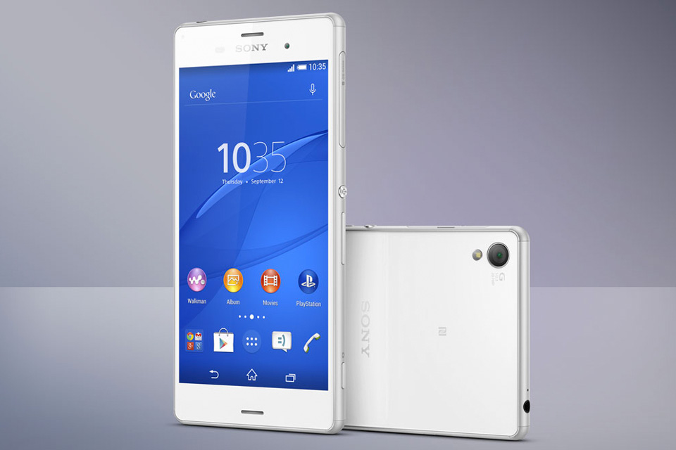

Microsoft Continuum: o recurso que vai mudar a forma como vemos o celular
O futuro dos smartphones?
iOS 9 já faz parte de 57% dos iPhones e iPads, afirma Apple
Samsung Pay deve chegar ao Brasil no começo de 2016, diz executivo

Donos de aparelhos Sony Z3 podem testar o novo Android 6.0 Marshmallow
Conheça os novos smartphones Samsung Galaxy J5 e Galaxy J7
A linha Galaxy está ganhando dois novos modelos no Brasil: Galaxy J5 e Galaxy J7, já disponíveis nas lojas.
O objetivo da Samsung com esses aparelhos é oferecer uma linha com visual atraente e hardware capaz de suprir todas as necessidades diárias dos consumidores.
Para quem é exigente com o display, o Galaxy J5 conta com uma tela Super AMOLED de 5 polegadas. A tecnologia garante cores mais vivas e um melhor contraste de imagem, se comparada às telas LCD e TFT. O resultado disso é uma experiência ainda mais atraente para assistir aos seus vídeos preferidos ou jogar os games mais baixados do momento.
Todos os recursos do Galaxy J5 também estão presentes no Galaxy J7.
A diferença é que o Galaxy J7 tem tela de 5,5 polegadas e conta com processador octa-core. A linha Galaxy J está disponível nas cores preta, branca e dourada.
Dos desenhos animados para os games: 5 jogos para Android e iOS
Você passou a infância, a adolescência ou a vida adulta assistindo a desenhos animados de todos os tipos, com os personagens mais malucos e em todos os canais que a sua televisão permitia.
Porém, você não precisa deixar esse mundo de fantasia de lado: são vários os jogos para tablets e smartphones que trazem a realidade dos desenhos animados para o seu dispositivo móvel.
Os estilos são os mais variados, e é bem provável que algum deles vire o seu mais novo vício no mobile.
Abaixo e no vídeo, selecionamos apenas alguns.
-SpongeBob Diner Dash
-Corrida Cartoon
-Garfield – Vida Boa
-Looney Tunes Dash!
-Smurf’s Village
Assista aos novos comerciais do Samsung Galaxy Note 5 e do Galaxy S6 Edge+
Com o lançamento dos mais recentes top de linha da Samsung, novos comerciais também começam a pipocar na internet e na televisão.
Agora, a companhia sul-coreana está levando clipes sobre o Galaxy Note 5 e o Galaxy S6 Edge+ para a telinha.
Você vai poder assistir os dois vídeos aqui embaixo. O primeiro, sobre o Note 5, toca em destaques como a tela de 5,7" Quad HD e a caneta S Pen que ajuda a "alcançar os seus sonhos".
Já o segundo, sobre o S6 Edge+, foca na câmera de alta qualidade e nas bordas laterais curvas.
Galaxy Note 5
Galaxy S6 Edge+
Vídeo compara as câmeras do Xperia Z5 e do iPhone 6S Plus
Embora ainda não tenha previsão de chegar ao Ocidente, o Xperia Z5 já está sendo submetido a testes por alguns veículos que falam a língua inglesa.
O último deles foi conduzido pelo site SuperSaf TV, que em seu canal de YouTube realizou uma série de comparações diretas entre a câmera do aparelho e aquela presente no iPhone 6S Plus, da Apple.
Apesar de ser bem avaliado em benchmarks, aparentemente o aparelho da Sony deixa a dever em qualidade em alguns sentidos quando comparado a outros produtos top de linha do mercado.
O aparelho da companhia japonesa nem sempre captura imagens satisfatórias em ambientes pouco iluminados e a falta de um sistema de estabilização prejudica a gravação de vídeos em 4K.
No entanto, o aparelho da Sony se destaca positivamente em alguns quesitos, como em seu foco automático que opera de maneira bastante rápida.
Além disso, a câmera frontal foi elogiada por suas cores bem definidas e pelo nível de detalhes que apresenta — contanto que as condições de luz ambiente sejam consideradas boas.
Pelo que podemos ver no vídeo, o Xperia Z5 tem como seu principal pecado apresentar uma perda de detalhes visível quando ele é usado para capturar imagens em locais escuros.
No entanto, a qualidade geral do aparelho não decepciona, embora, na avaliação do SuperSaf TV, o produto da Apple ainda possa ser considerado superior nesse sentido.